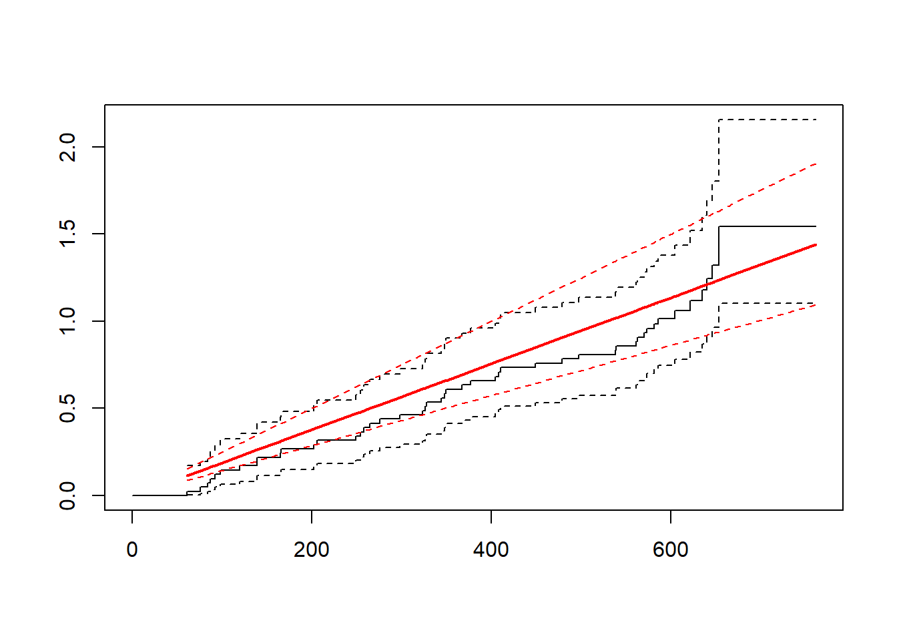
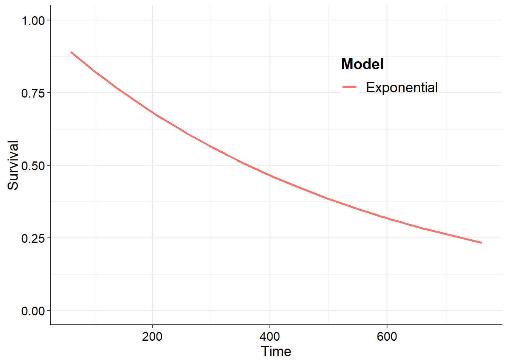

Assessing model assumptions using transformed hazard plots
Background
Prior to fitting a model based on an assumed parametric form for the hazard function, a preliminary study of the validity of this assumption should be carried-out.
Let us compare the survivor function for the data with that from a chosen model. To do this we will transform the survivor function to produce a plot that should give a straight line if the assumed model is appropriate.
For the Weibull, twice taking logs of the survivor function with scale parameter \(\lambda\) and shape parameter \(\gamma\)
\[
log(-log S(t)) = log \lambda + \gamma log t
\]
A plot of \(log(-log S(t))\) against \(log(t)\) would give an approximately straight line if the Weibull assumption is reasonable. The plot could also be used to give a rough estimate of the parameters.
Similarly, for the log-logistic distribution
\[
log S(t)/(1 - S(t)) = \theta - \kappa log t
\]
For the log-normal distribution
\[
\Phi^{-1} (1 - S(t)) = (log t - \mu) / \sigma
\] The slope and intercept of this line provide estimates of \(\sigma^{-1}\) and \(-\mu/\sigma\), respectively.
We can also check the assumption made with using the Cox regression model of proportional hazards by inspecting the log-cumulative hazard plot.
\[
log H_i(t) = \beta x_i + log H_0(t)
\]
The transformed curves for different values of the explanatory variables will be parallel if PH holds.
The package commonly used for survival analyses in R is the survival package (Therneau T 2021). We will begin by repeating an example from the survival help documentation.
This uses their reliability data. Firstly a little data manipulation is done before we plot the cumulative hazard plot against time using the in-built survival package plotting method with the cumhaz=TRUE argument.
fit <-survfit(Surv(time1, time2, status) ~1, data = vdata, id = id)plot(fit, cumhaz =TRUE, xlab ="Days", ylab ="Cumulative hazard")
We can plot the log-cumulative hazard against log-time by simply plotting the survfit output values directly by specifying the x and y data explicitly.
plot(log(fit$time), log(fit$cumhaz), xlab ="log-Days", ylab ="Log-cumulative hazard", type ="l")
For the following, the latest development version fo the survHE package (Baio 2020) contains all of the functions that we will need. We can obtain this from GitHub with the following.
The plot_transformed_km also provides plots for log-normal and log-logistic distribution assumptions with the corresponding transformation to the survival data.
Using flexsurv
Further, we could use the flexsurv package (Jackson 2016). This package contains lots of functions for a range of survival distributions.
The cumulative hazard can be plotted with the flexsurv plotting method with argument type = "cumhaz". The Kaplan-Meier is also overlaid by the model fit.
library("flexsurv")fs1 <-flexsurvreg(Surv(time1, time2, status) ~1, data = vdata, dist ="exp")plot(fs1, type ="cumhaz")

fs2 <-flexsurvreg(Surv(time1, time2, status) ~1, data = vdata, dist ="weibull")plot(fs2, type ="cumhaz")
Using survHE
library("survHE")fs1 <-fit.models(Surv(time1, time2, status) ~1, data = vdata, dist ="exp")plot(fs1, type ="cumhaz")

fs2 <-fit.models(Surv(time1, time2, status) ~1, data = vdata, dist ="weibull")plot(fs2, type ="cumhaz")
References
Baio, Gianluca. 2020. survHE: Survival Analysis for Health Economic Evaluation and Cost-Effectiveness Modeling.J. Stat. Softw.https://doi.org/10.18637/jss.v000.i00.
Collett, Dave. 2013. Modelling Survival Data in Medical Research. 3rd ed. Chapman; Hall/CRC. https://doi.org/https://doi.org/10.1201/b18041.
Jackson, Christopher H. 2016. flexsurv: A Platform for Parametric Survival Modeling in R.J. Stat. Softw. 70 (1): 133. https://doi.org/10.18637/jss.v070.i08.